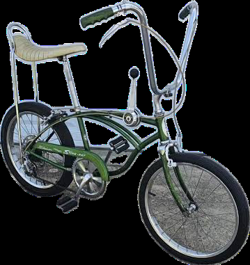
1970 Schwinn Bicycle
Classic BicycleThe quintessential 1970s American neighborhood cruiser. Built with heavy-duty Chicago steel, a banana seat, and high-rise handlebars, ready for cruising the block from morning until the streetlights came on.
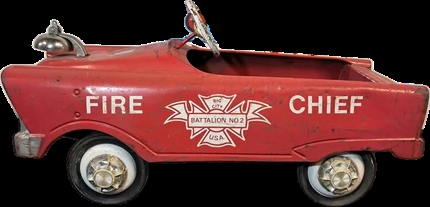
Pedal Car
Pedal PowerMark's very first taste of wheeled independence—the classic red Fire Chief pedal car. Used for delivering papers around the neighborhood and getting early miles behind the wheel before upgrading to horsepower.
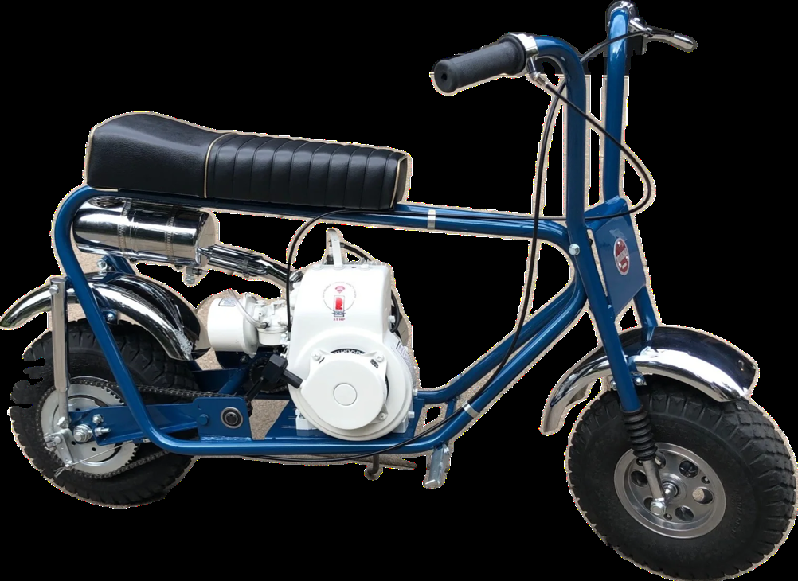
1970 Briggs & Stratton Mini-Bike
Vintage Mini-BikePowered by the classic pull-start lawnmower engine that started a generation of motorheads. Loud, fast, raw backyard fun with a centrifugal clutch, rigid frame, and plenty of thrills.
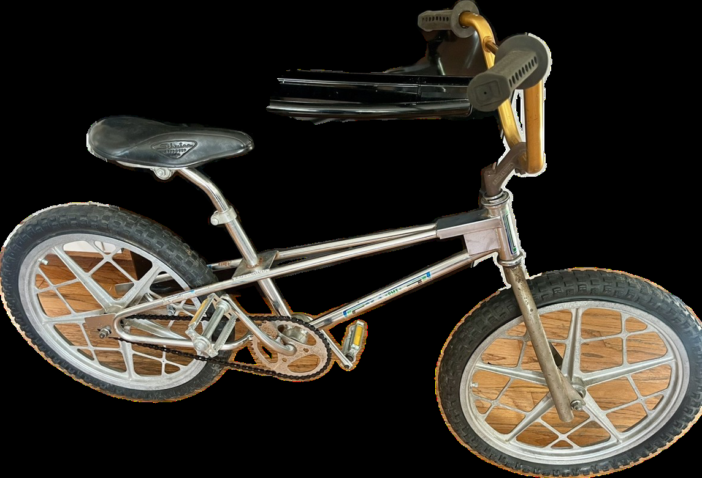
1970 Redline Bicycle with Mag Wheels
BMX PioneerAn early pioneer of BMX culture featuring tough composite Mag wheels. Built for neighborhood dirt jumps, curb hops, and unmistakable retro street style.
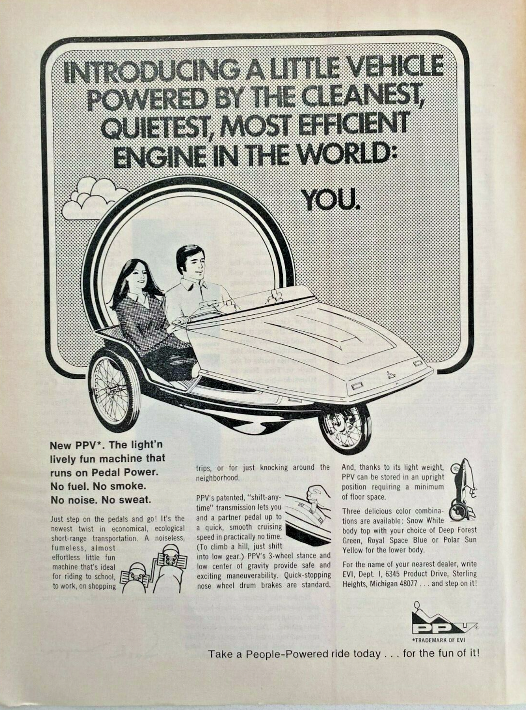
1970 EVI PPV Pedal Car
People Powered VehicleThe famous People Powered Vehicle (PPV) built by EVI during the 1970s fuel crisis. A futuristic two-passenger, three-wheeled pedal car featuring a lightweight fiberglass shell and dual independent pedaling.
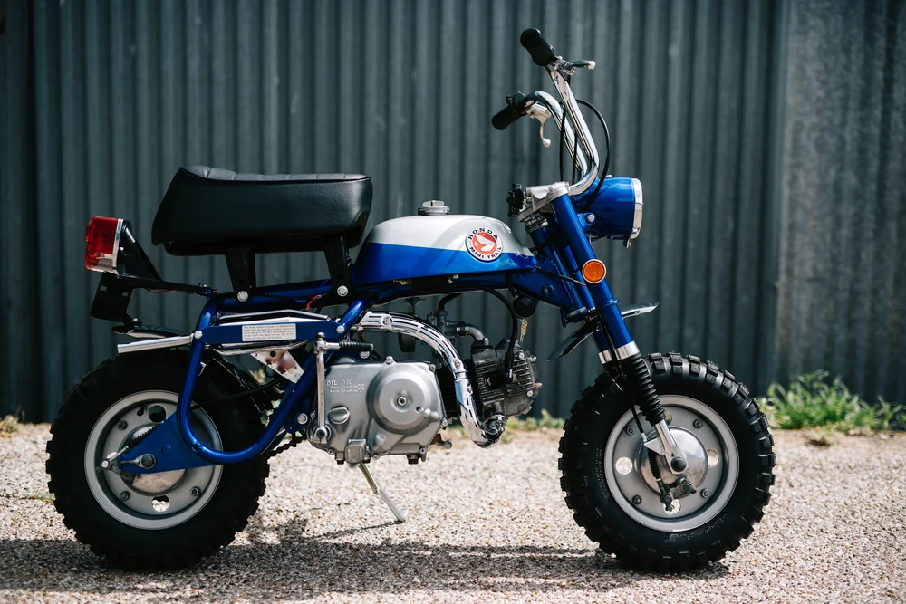
1969 Honda ZW50 Minibike
Trail MinibikeThe legendary Honda Mini Trail (Z50). Featuring an indestructible 49cc four-stroke engine, 3-speed automatic clutch, and fold-down handlebars so it could pack into the car trunk for weekend trail riding.
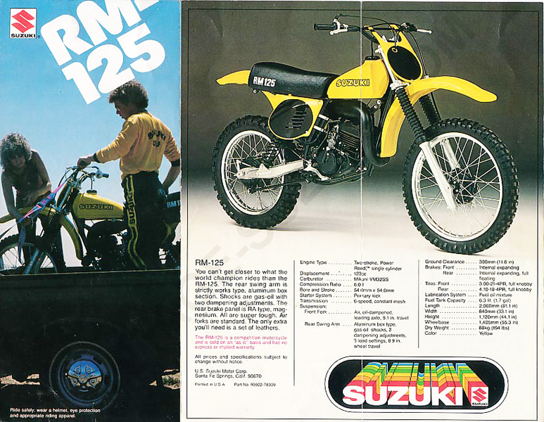
1978 Suzuki RM125
Motocross (125cc)A screaming yellow racing machine from the golden era of two-stroke dirt bikes. Famed for its long-travel suspension, razor-sharp cornering, and championship-winning motocross heritage.
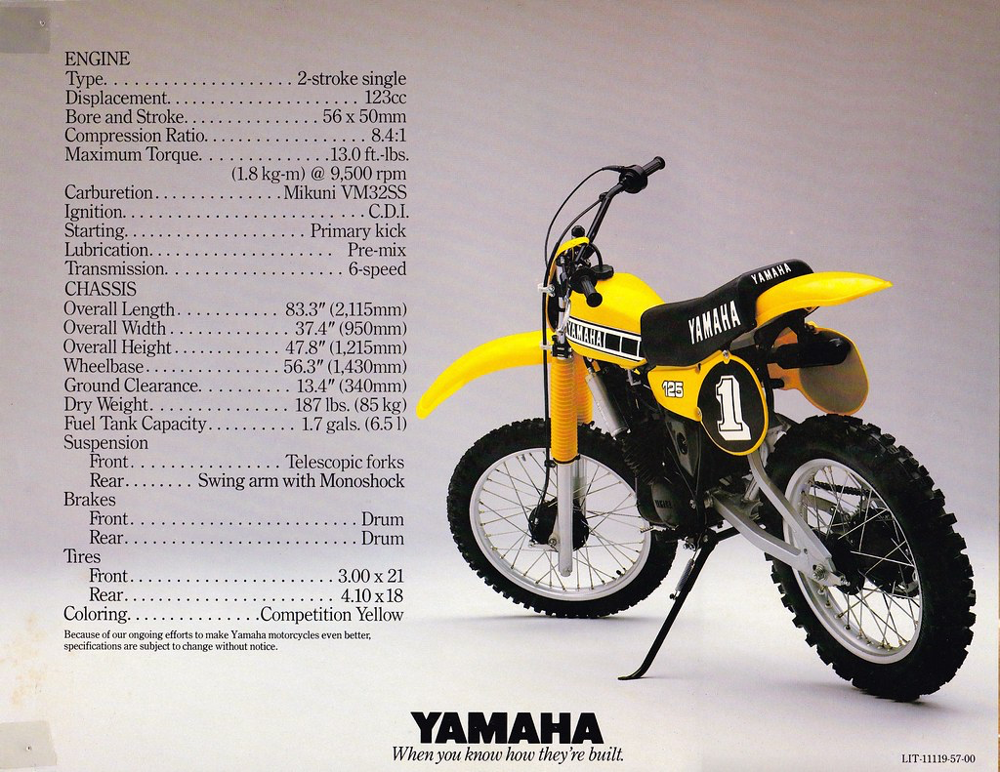
1980 Yamaha YZ125
Motocross (125cc)Yamaha's factory competition dirt bike sporting iconic yellow-and-black racing graphics and the pioneering Monoshock single-shock rear suspension that revolutionized motocross tracks.
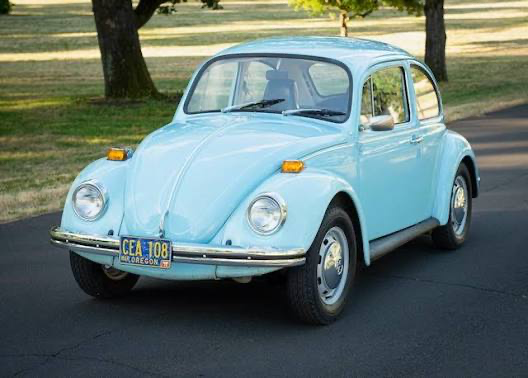
1972 Volkswagen Bug (Light Blue)
Air-Cooled ClassicFinished in light blue with the unmistakable air-cooled flat-four rumble. Simple to wrench on, endlessly charismatic, and full of great memories on every drive.
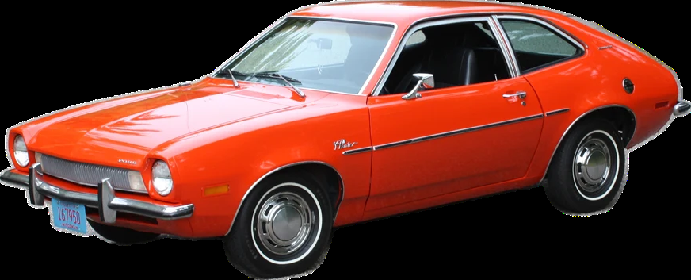
1982 Ford Pinto Hatchback
Classic HatchbackA definitive piece of early-80s American motoring history. Practical rear liftgate, honest four-cylinder power, and reliable daily transportation duty.
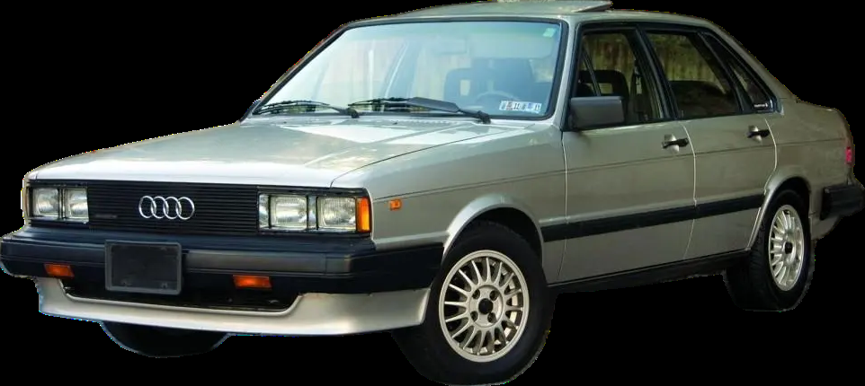
1984 Audi 4000
European Sport SedanClean Giorgetto Giugiaro wedge lines, crisp steering, and refined German road manners. An engaging European sports sedan that was a joy to drive.
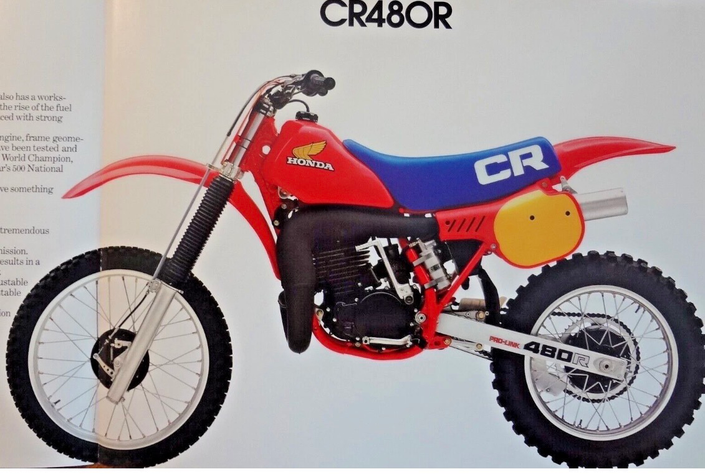
1983 Honda CR480
Open-Class MotocrossThe ferocious big-bore air-cooled two-stroke beast. Renowned for its monstrous low-end torque, 5-speed gearbox, and blistering open-class acceleration that demanded respect.
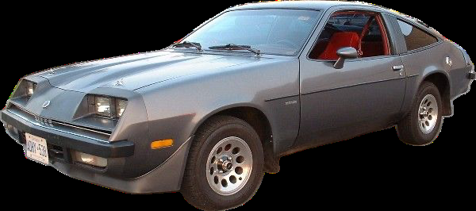
1980 Chevrolet Monza Hatchback
Sport HatchbackSporty 2+2 subcompact styling with a long sloping nose, fastback rear glass, and classic late-era GM rear-wheel-drive flair.
2000 Chevrolet Silverado (Lowered Street Look)
Custom Street TruckClean custom street truck styling featuring a lowered stance, smooth body lines, and dependable Chevy V8 muscle. Sleek, rumbling, and built to cruise.
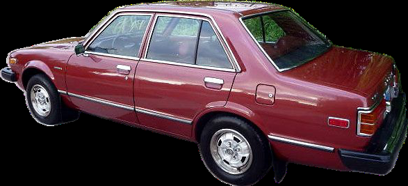
1980 Honda Accord
Classic HatchbackThe car that set the benchmark for Japanese reliability and engineering excellence. Smooth 5-speed manual shifting, great efficiency, and bulletproof durability.
1968 Volkswagen Baja Bug (Blue)
Off-Road Baja BugBuilt for kicking up roost on sand dunes and rugged dirt trails. Dressed in blue with trimmed fenders, tubular steel bash bars, and high-clearance off-road tires.
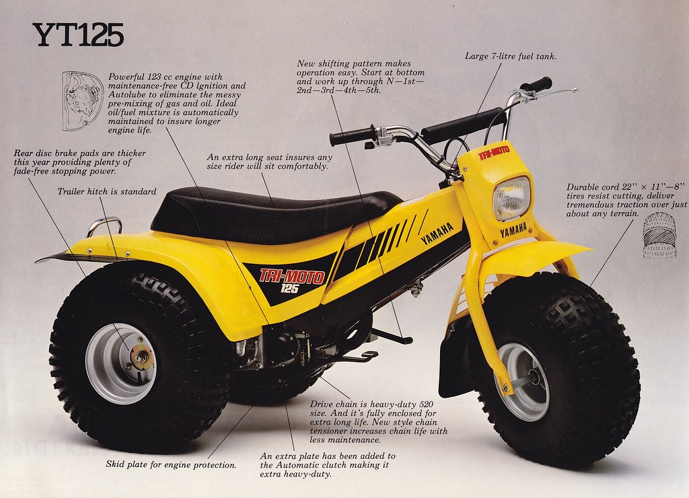
Yamaha YT125
Tri-Moto 3-WheelerThe classic Yamaha Tri-Moto three-wheeler ATV. Powered by a peppy 123cc two-stroke engine on balloon knobby tires, made for sliding around dirt trails and sand dunes.
1966 Volkswagen Baja Bug (Purple)
Off-Road Baja BugAnother rugged desert conversion turned out in eye-catching purple. Stinger exhaust, chopped fiberglass bodywork, and air-cooled power ready for off-road fun.
Sandrail Blue
Dune BuggyCustom open-cockpit sandrail featuring a lightweight tubular chassis finished in bright blue. High horsepower-to-weight ratio and rear paddle tires built for flying across sand dunes.
Sandrail Red
Dune BuggyThe companion dune-carver in bold red. Stripped down to tubular steel, racing buckets, and air-cooled horsepower designed for carving bowls and climbing steep dunes.
1969 Volkswagen Bug (Street Look)
Custom Street BugA dialed-in California street Bug. Lowered front beam, tucked stance, clean body lines, and a lively dual-carb engine built for boulevard cruising.
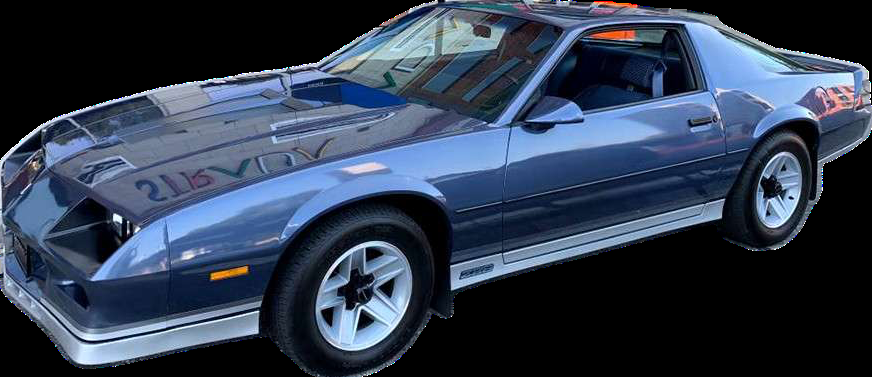
1984 Chevrolet Camaro Z28
American MuscleThe undisputed hero of 1980s American muscle. Sharp third-generation styling, aggressive aerodynamic ground effects, throaty V8 rumble, and unmistakable attitude.
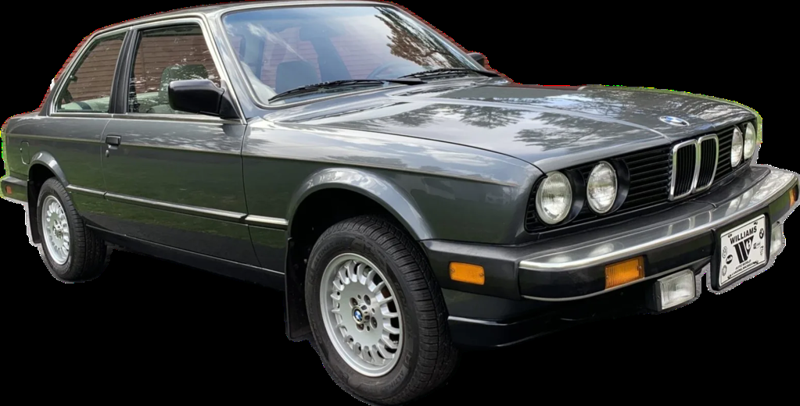
1984 BMW 318i
German Sport SedanThe iconic E30 generation chassis famed for its sublime steering feel, balanced 50:50 weight distribution, and timeless Bavarian sports sedan heritage.
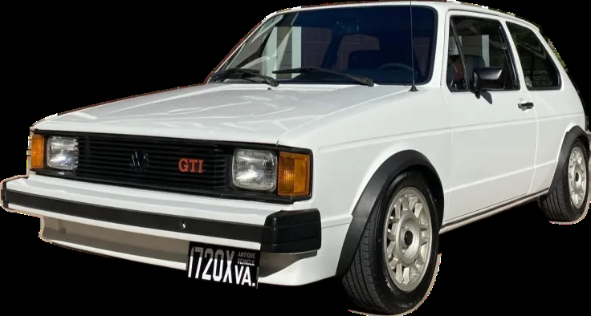
1984 Volkswagen GTI
Mk1 Hot HatchThe original hot hatch that started a worldwide revolution. Lightweight chassis, rev-happy fuel-injected engine, and razor-sharp cornering agility that made every drive an event.
1974 Volkswagen Bus
Classic TransporterThe legendary air-cooled Type 2 late-bay transporter. Loaded with personality, room for family and friends, and built for weekend camping trips and slow-lane adventures.
2000 Audi A4 2.0T
Turbo Sport SedanClean European sport sedan styling paired with responsive turbocharged power, tight suspension tuning, and premium German interior craftsmanship.
2002 Audi A4 3.0L
Quattro V6 SedanPowered by a smooth 3.0-liter V6 and Audi's legendary Quattro all-wheel-drive system. Surefooted in all weather conditions with refined highway cruising luxury.
2003 Ford F350 6.0L Crew Cab
Heavy-Duty Diesel TruckHeavy-duty Super Duty crew cab equipped with the 6.0L Power Stroke turbo diesel. Immense towing muscle, four full doors, and serious hauling capability.
2000 Yamaha YZ250
Motocross (250cc)The benchmark of two-stroke motocross machinery. Lightning-fast throttle response, explosive mid-range hit, and nimble handling that made it a legend on tracks everywhere.
2003 Yamaha YZ450F
4-Stroke MotocrossThe machine that ignited the modern four-stroke motocross era. Equipped with a potent 449cc engine, titanium valves, and a legendary 4-speed gearbox that hit hard everywhere.
2004 Volkswagen Touareg V8
Luxury V8 SUVVolkswagen's flagship luxury SUV powered by a muscular 4.2-liter V8 engine, advanced all-wheel-drive system, and genuine off-road capability wrapped in executive German comfort.
1989 BMW R1200GS
Adventure MotorcycleThe definitive globetrotting adventure motorcycle. Engineered around BMW's rugged boxer twin motor, shaft drive, and long-travel suspension built to conquer any road or trail.
2005 Honda CRF450
4-Stroke MotocrossHonda's lightweight aluminum-chassis motocross weapon. Unicam four-stroke engine technology delivering instant power, plush suspension, and race-winning track performance.
2007 Yamaha YFZ450 (Quad)
Sport ATV QuadHigh-performance sport ATV powered by a liquid-cooled 5-valve racing engine. Wide stance, low center of gravity, and race-tuned suspension built for carving tracks and flying over sand dunes.
2008 Yamaha YFZ450 (Quad)
Sport ATV QuadThe championship-proven high-performance quad. Refined chassis dynamics, blistering throttle response, and aggressive ergonomics engineered for high-speed dune riding.
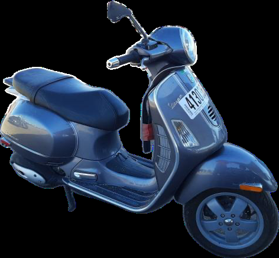
2005 Piaggio Vespa GT200
Italian ScooterTimeless Italian styling paired with a punchy liquid-cooled 200cc four-stroke engine. Pressed steel monocoque body, smooth twist-and-go automatic drive, and effortless vintage flair.
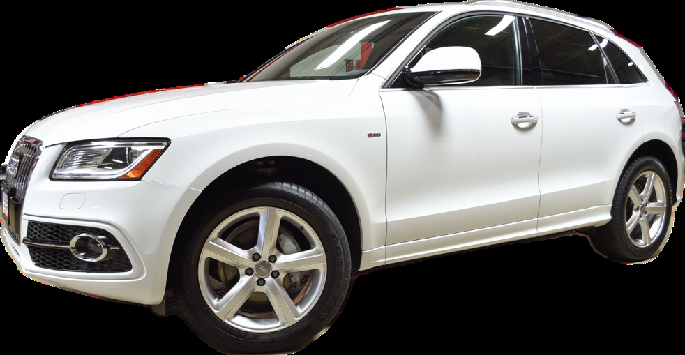
2017 Audi Q5 2.0T
Quattro Luxury SUVModern luxury, versatile utility, and all-weather confidence. Turbocharged 2.0-liter power combined with Quattro all-wheel drive, premium tech, and refined German engineering.